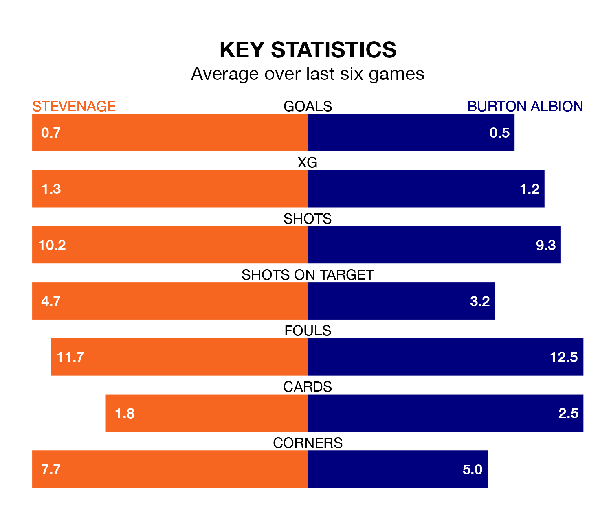

Stevenage are heavy favourites to keep all three points at home in Saturday's kick-off against Burton Albion.
The Boro, who sit ninth in EFL League One with 43 games played, are priced at 1.5 to seal victory at the Lamex Stadium.
Sitting 11 places and 27 points behind them in the table, Burton are 5.5 to win with *Betting Company*, while the draw is at 3.8.
Stevenage are in disappointing form in EFL League One, with one win and three draws from their last six games.
With no wins and a draw over that period, Burton's form is worse – they have taken one point from 18, compared to the Boro's six.
In Jamie Reid, the hosts have one of the league's most on-form strikers so far this season. He has notched 18 goals in 40 appearances, to sit third in the scoring charts.
His goal rate of one every 182 minutes is quicker than that of Beryly Lubala, Albion's top scorer with a goal every 335 minutes, and a total of seven goals in 33 games.
With 33 goals in 42 games so far this season, the Brewers are the league's second-lowest scorers with 0.8 goals per game. And they are conceding more than average, letting in 59 goals at a rate of 1.4 per game.
Stevenage are also below average scorers, with 1.2 goals per game, compared to a league average of 1.3. They have conceded 1.0 goal per game.
Stevenage's last match was on Tuesday, a 2-1 win against Barnsley, with Dan Butler and Reid getting the goals for the Boro.
Burton lost 4-0 against Oxford United last time out, on April 6.
Saturday's match will be refereed by Ben Toner, who has taken charge of 13 EFL League One games so far this season, issuing no red cards and booking 68 players. He has awarded three penalties.
The last Stevenage game Toner refereed was a 3-2 away win against Wigan Athletic on January 27. His last Burton match was their 3-2 loss away at Derby County on January 15.
Updated: 10:01 (UTC), 12/04/24